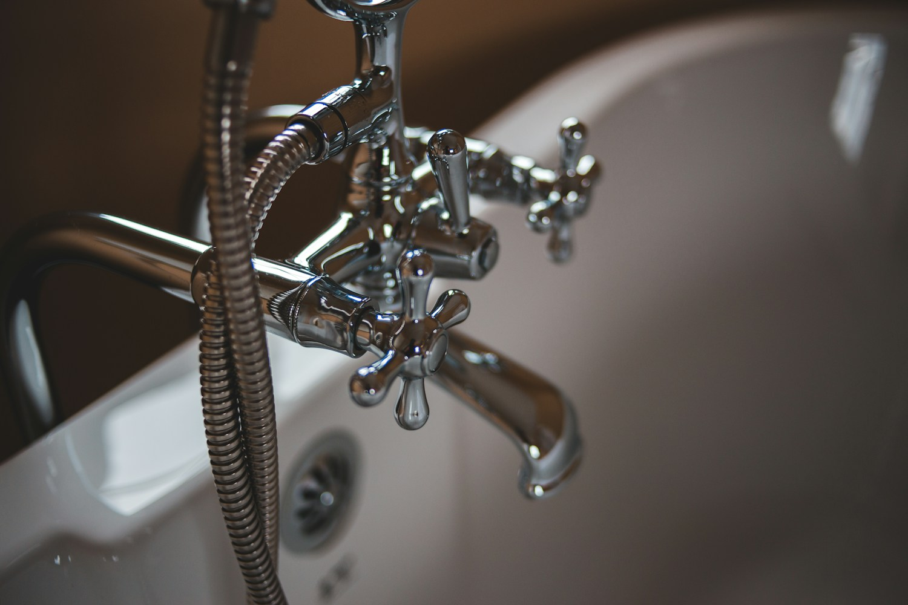

↘
Leaks & repairs
Dripping taps, running toilets, under-sink leaks, and the small fixes that make a real difference.
Sample diagnostic visit · $85
For the place you call home
Small repairs. Fresh installations. Clear answers. A thoughtful approach to keeping New Bern homes flowing.
Weekdays 8–5 · New Bern & nearby communities

Everyday problems, handled
Focused residential plumbing for the things your household depends on. These are sample prices; a final scope comes before work begins.
Dripping taps, running toilets, under-sink leaks, and the small fixes that make a real difference.
Sample diagnostic visit · $85
A new kitchen faucet, a better shower head, or a replacement toilet. Thoughtful finishing, right down to the seal.
Sample faucet installation · from $145 labor
Slow bathroom drains, household clogs, and practical upkeep advice to keep everyday life moving.
Sample drain service · from $125
Concept pricing excludes parts and unusual access. No emergency or after-hours service is offered in this demonstration.
A neighborly way to work
Tidewell is a fictional small plumbing business imagined around a simple idea: trades should feel straightforward. You should understand the problem, your options, and the next step.
Start with a few details ↗A sound, a drip, a stubborn drain. A little context helps plan the visit.
Review the proposed work and price before a tool comes out.
A clean workspace, a walkthrough, and practical care tips.
Before the visit
This concept serves New Bern, Trent Woods, River Bend, and nearby Craven County neighborhoods. Share your general location to help scope a visit.
This portfolio concept does not provide real services or emergency dispatch. For a real active plumbing emergency, contact a local operating provider.
The imagined service includes homeowner-supplied fixtures after a compatibility review. Parts, condition, and access affect the final price.
A clearer next step
Describe the issue, your general location, and a convenient time. This interactive concept shows how a simple request experience could work.
New Bern, North Carolina
Monday–Friday · 8am–5pm
Fictional: (252) 555-0101
hello@tidewell.example